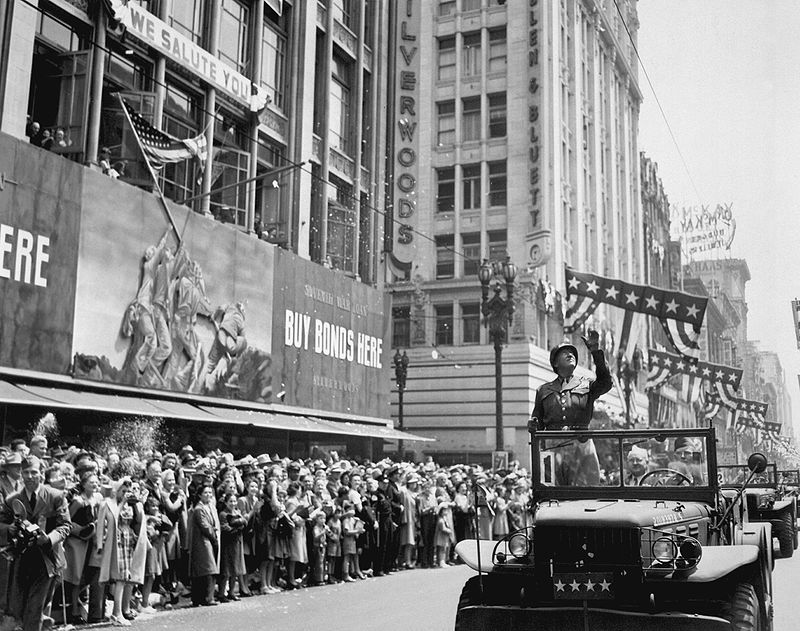

General George S. Patton: The Heroic Tank Commander
General George S. Patton was a brave and important leader in the United States Army during World War Two. He was born on November 11, 1885, and he loved being a soldier from a very young age.
Patton was known for his strong and determined personality. He wore a shiny helmet and sometimes even carried a pair of ivory-handled revolvers. He was often seen in a big, tough tank leading his soldiers into battle.
General Patton was really good at planning strategies and leading his troops to victory. He played a key role in important battles, and his leadership helped the Allies win the war.
Even though he was tough and strict, General Patton cared a lot about his soldiers. He wanted them to be the best they could be, and he always wanted to make sure they had what they needed.
Kids might also find it interesting to know that General Patton had a dog named Willie, and they were great friends. Patton was a hero who helped make the world a better place, and his courage and leadership are still remembered today.

A Short Biography: George S. Patton
George Smith Patton was a brave leader who played a crucial role in the United States military during World War II. Born on November 11, 1885, in San Gabriel, California, he grew up in a family with a strong military tradition.
From a young age, Patton loved history and dreamed of becoming a hero like the ones he read about. He attended the United States Military Academy at West Point, where he excelled in sports and academics. Patton was even an Olympic athlete, competing in the pentathlon during the 1912 Summer Olympics.
When World War II broke out, Patton was ready for action. He became known for his bold and fearless leadership, often leading his troops from the front. His soldiers loved him for his tough, yet fair, approach. Patton believed in discipline and hard work but also cared deeply for the well-being of his men.
Patton played a key role in the Allied forces' success, especially during the famous Battle of the Bulge. His quick thinking and strategic skills helped turn the tide of the war in favor of the Allies. Patton's leadership and determination earned him the nickname "Old Blood and Guts" because he was always at the heart of the action.
After the war, Patton continued to serve his country until his untimely death in a car accident on December 21, 1945. Though his life was cut short, General George S. Patton's legacy as a courageous and brilliant military leader lives on. He remains a symbol of bravery, dedication, and heroism, inspiring people around the world, including the young minds of today.
Fun Facts
Tank Commander: General Patton was famous for leading tanks into battle during World War II. He was one of the best tank commanders in history!
Fancy Uniform: He was known for his fancy, shiny helmet and pistols. He looked like a cowboy from a movie, which made him even more famous.
Olympic Athlete: Patton was a great athlete. He even competed in the Olympics as a young man in a sport called the pentathlon, which includes running, swimming, shooting, fencing, and horseback riding!
Timeline
1885 Born on November 11: George Smith Patton Jr. was born in San Gabriel, California. He came from a military family, and his father was a successful officer in the United States Army.
1909 Graduates from West Point: Patton attended the United States Military Academy at West Point and graduated as a second lieutenant. He was known for his determination and love for military history.
World War I Tank Commander: During World War I, Patton served as a tank commander in France. He quickly gained a reputation for his bravery and leadership skills on the battlefield.
1936 Competes in the Olympics: Patton was an accomplished athlete and participated in the pentathlon in the 1912 Summer Olympics in Stockholm, Sweden. The pentathlon includes events like shooting, swimming, fencing, horseback riding, and cross-country running.
World War II North Africa Campaign: During World War II, Patton played a crucial role in the Allied forces' success in North Africa. His leadership and bold strategies helped defeat the Axis powers in the region.
1944 D-Day Invasion: Patton played a significant role in the planning and execution of the D-Day invasion in June 1944, a turning point in World War II. His leadership skills were instrumental in the success of the operation.
1945 Liberates Nazi Concentration Camps: As Allied forces advanced through Europe, Patton's troops liberated several Nazi concentration camps, revealing the horrors of the Holocaust. This experience deeply affected Patton, and he spoke out against the cruelty he witnessed.
Post-World War II Occupation of Germany: After the war, Patton was involved in the occupation of Germany. He was responsible for maintaining order and helping to rebuild the country.
1945 Passes Away: Tragically, General Patton died in a car accident on December 21, 1945, in Germany. He was posthumously awarded the Bronze Star for his wartime service.

Impact on the World
General Patton was a brave and tough leader. He helped the Allies win World War II by leading his soldiers into some of the most important battles. He believed in working hard, being disciplined, and never giving up.
His leadership and daring tactics inspired his soldiers. General Patton's strategies helped defeat Nazi Germany, which was very important in ending the war in Europe.
He's remembered as a true American hero, known for his determination and leadership in one of the most challenging times in history.
Reference Books for Elementary Students
"Who Was George Washington?" by Kirsten Anderson - This book is part of the "Who Was?" series and provides an easy-to-read biography of General Patton.
"General George S. Patton: Old Blood and Guts" by Alden R. Carter - This book is written for young readers and offers an engaging look into Patton's life and achievements.
"General George Patton: A Life of Service" by Dan Elish - This biography is written with young readers in mind and covers the life and accomplishments of General Patton.
"The Greatest War Ever: George Patton, D-Day, and the Battle of the Bulge" by M. Zachary Sherman - This graphic novel is a fun and educational way for elementary students to learn about General Patton's role in World War II.
These books will provide elementary students with valuable insights into the life and achievements of General George S. Patton.